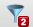

Webサイトの一部を、柔軟にカスタマイズできるルールによって非表示にすることのできる拡張です。 たとえば、「Twitterを見ているとき、投稿本文に◯◯という文字が含まれていたらツイート全体を非表示にする」「ソーシャルブックマークで、◯◯というタグのついているコメントを非表示にする」といったことができます。

XPathは、HTMLの構成要素の中から特定の条件を満たす要素をピックアップするための表現です。
XPathは、ソフトウェア開発の経験のない方にはとっつきにくいものですが、「XPathを取得」ボタンを押すことで、簡単にXPathの候補を表示することができます。 「XPathを取得」ボタンを押し、選択したい要素をクリックしてください。類似した要素をピックアップできるXPath候補がいくつか表示されます。

左端に表示されている数字は、表示中のページの中でそのXPathにヒットする要素の数です。カーソルを合わせると、該当する要素がハイライトされますので、意図した通りの要素がヒットするようなXPathを選んでルールを作成してください。
更に詳しいことについては、以下の記事を参考にしてください。
キーワードを含んでいるかどうかの判定を行う方法として、「単純にその文字列を含んでいるかどうかを判定する」というものと「正規表現と一致するかどうかを判定する」という2通りがあります。 チェックボックスにチェックを入れると、正規表現を使った判定を行います。チェックを入れない場合は、単純に一致するかどうかを判定します。 よくわからなかったらチェック無しで登録しても構いません。

「無条件で隠す」にチェックを入れます。キーワードや「検索範囲」と関係なく、無条件で「隠す要素」が表示になります。

表示中のページの中で、ルールに合致して非表示になった要素の数をあらわします。

拡張自体をオフにする方法と、一部のルールのみをオフにする方法があります。
拡張自体をオフにするには、ツールバーのアイコンをクリックしたときに出る小窓の「ON」「OFF」ボタンで切り替えます。
特定のルールのみのオン・オフを切り替えるには、ツールバーのアイコンをクリックしたときに表示される「適用中のルール」の「ON」「OFF」ボタンを使います。 もしくは、ルール一覧画面で「ON」「OFF」ボタンを押します。
「エクスポート」機能を利用すると、テキストファイルとしてルールを出力し、保存することができます。 エクスポートしたファイルをインポートすることもできます。 複数のマシンで共有する場合や、バックアップをとりたい場合に、この機能をお使いください。